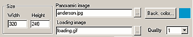
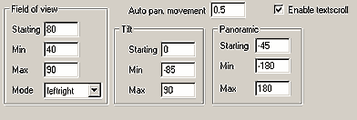

|

Basic Settings
First of all, set the applet Width and Height in
pixels. Next, enter the source file name of the panoramic image.
For the best result, you must provide a specifically made image
as described above. Even if only panoramic images produced with
special optical cameras are perfect, normal images could be loaded
and "panoramized": results may
be not most realistic, but you may try.
Optionally, you can set a picture to display when the panoramic
image is loading, at loading image box. This could be useful
for panoramic images of large resolution taking minutes to load.
If the loading image is smaller than applet area, it will be centered
and plotted over the background color, which you could also
specify.
With quality pull-down menu, you set the precision of the
panoramic rendering. With value = 1, there is no bilinear filtering
(faster but less detail). With value = 2, there is bilinear filtering
only when the image is not moving. With value = 2, there is bilinear
filtering all the time (suggested).

Zooming
Look at the group of parameters named Filed of view. This
controls camera zooming. Set the zoom starting value, and
minimum and maximum zooming values. The value for
each position has to be from 10.0 to 170.0, including
float precision.
With the mode pull-down menu, you could choose if a single
or double mouse buttons controls the zooming. One-button
means either left mouse button of a Windows mouse, or a button for
a Macintosh style single button mouse. Left-right option
works only if you have a Windows style mouse.
Note: You can also use the arrow keys to scroll the image. To zoom
in/out with keyboard, use respectively the "+" and "-"
keys.
Vertical view
Tilt group of parameters controls tilting up and down of the camera.
Set the tilt starting value, and minimum and maximum
tilt values. The value needs to be ranged from -90 to +90.
Horizontal view
Panoramic group of parameters controls horizontal camera view.
Set starting, minimum, and maximum angles.
The range of available value for starting angle is [-180, 180],
while, the min and max values must be chosen from [-180, 0],
and [0, 180] respectively.
If the Auto pan movement value is greater than 0.0,
the camera will move automatically. Use positive values to move
the image to the right, negative values to move these to the left.
We have only discussed about the anfy panprama specific
parameters. For generic parameters, please read wizard
section.
Proceed to the expert menu,
next.
|